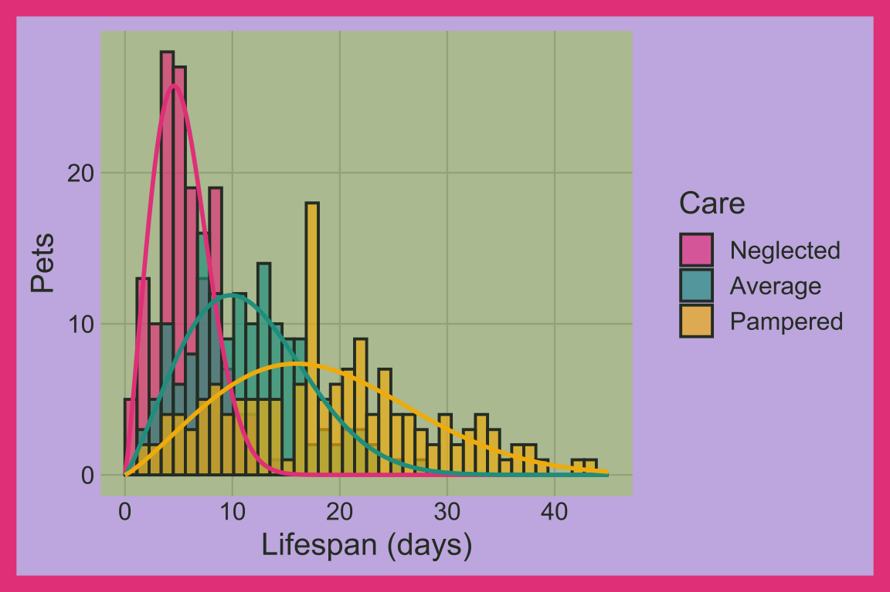
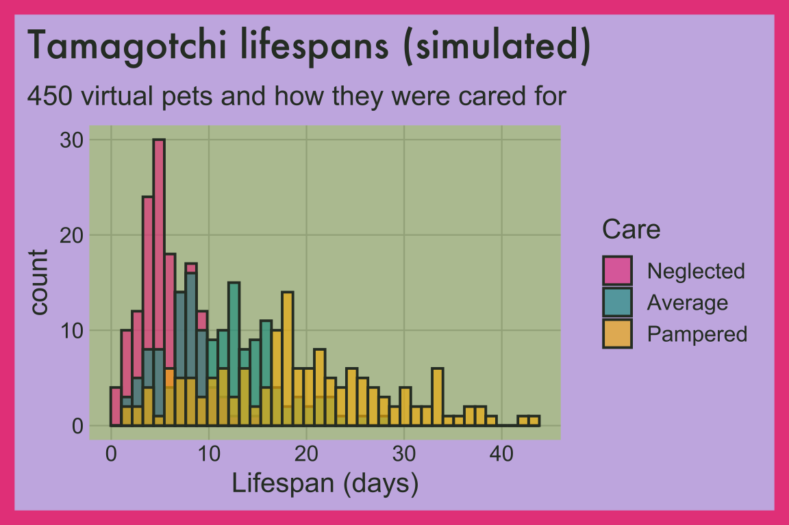

19 Overlapping histograms
19.1 Description
Overlapping histograms allow us to compare distributions across the groups of a categorical (or ordinal) variable.
19.2 Set up
PACKAGES:
Install packages.
show/hide
library(ggplot2)
library(dplyr) # for tibble() and data manipulationDATA:
In 1997, kids everywhere were feeding, cleaning, and playing with Tamagotchis, and how long a virtual pet lived depended on how well it was cared for. We’ll simulate the lifespans of 450 pets, 150 for each level of care. rweibull() draws each lifespan from a Weibull distribution, and the scale for each level of care (6, 13, or 21 days) stretches the lifespans of better cared for pets. Setting the seed with set.seed() means you’ll get the same 450 pets every time you run the code below.
show/hide
set.seed(1997)
tamagotchi_pets <- tibble(
pet_id = 1:450,
care = rep(c("Neglected", "Average", "Pampered"), each = 150)) |>
mutate(care = factor(care, levels = c("Neglected", "Average", "Pampered")),
lifespan_days = round(rweibull(n(), shape = 2.2,
scale = c(Neglected = 6, Average = 13,
Pampered = 21)[as.character(care)]), 1))
glimpse(tamagotchi_pets)
#> Rows: 450
#> Columns: 3
#> $ pet_id <int> 1, 2, 3, 4, 5, 6, 7, 8, 9,…
#> $ care <fct> Neglected, Neglected, Negl…
#> $ lifespan_days <dbl> 7.2, 4.2, 2.9, 3.3, 8.2, 4…19.3 Distribution
Overlapping histograms compare the shape of one variable across groups. Here the groups have the same kind of shape (they all come from the same distribution), but each one is stretched by a different amount. Below we’ll move from the pets, to a picture, to the formula.
COUNT IT:
Start with the first five pets (all neglected).
show/hide
head(tamagotchi_pets, 5)None of these neglected pets made it past nine days. The summary below compares the three levels of care. Each mean is a little higher than its median, and the longest lived pet in each group lasted more than twice as long as the median.
show/hide
tamagotchi_pets |>
group_by(care) |>
summarise(
mean = mean(lifespan_days),
median = median(lifespan_days),
max = max(lifespan_days))DRAW IT:
The histograms below are drawn on top of each other (position = "identity"), and the lines are the Weibull curves we drew the lifespans from, scaled to match the counts. Every group has the same lopsided hump with a tail to the right. Better care doesn’t change the shape; it stretches the hump to the right and flattens it out.
show/hide
weibull_curves <- tidyr::expand_grid(
care = factor(c("Neglected", "Average", "Pampered"),
levels = c("Neglected", "Average", "Pampered")),
lifespan_days = seq(0, 45, by = 0.25)) |>
mutate(scale = c(Neglected = 6, Average = 13,
Pampered = 21)[as.character(care)],
count = 150 * (45 / 40) * dweibull(lifespan_days,
shape = 2.2, scale = scale))
ggplot(data = tamagotchi_pets, aes(x = lifespan_days, fill = care)) +
geom_histogram(alpha = 2/3, position = "identity",
binwidth = 45 / 40, boundary = 0) +
geom_line(data = weibull_curves, aes(y = count, color = care),
linewidth = 1, show.legend = FALSE) +
labs(x = "Lifespan (days)", y = "Pets", fill = "Care")
NAME IT:
The Weibull distribution is a common model for lifetimes. It has a shape (\(k\)) and a scale (\(\lambda\)):
\[ X \sim \text{Weibull}(k = 2.2, \; \lambda_{\text{care}}), \quad \lambda = (6, 13, 21) \]
The chance that a pet is still alive after \(t\) days is \(e^{-(t/\lambda)^k}\). When the shape is greater than 1 (like our 2.2), the risk of a pet dying grows the longer it lives, which gives the histogram its hump and right tail. The scale stretches everything: the median lifespan is \(\lambda (\ln 2)^{1/k}\), which is about 5, 11, and 18 days for our three groups. Our simulated medians are 5.3, 10.8, 18 days.
Try changing shape in rweibull(). A shape of 1 turns the hump into a steady decline (pets die at the same rate no matter their age), and a large shape makes every pet in a group die at about the same time.
19.4 Grammar
CODE:
Create labels with
labs()Initialize the graph with
ggplot()and providedataMap
lifespan_daysto thexaxis andcaretofillInside
geom_histogram(), setalphato2/3,positionto"identity"(so the bars overlap instead of stacking), andbinsto40
show/hide
labs_ovrlp_hist <- labs(
title = "Tamagotchi lifespans (simulated)",
subtitle = "450 virtual pets and how they were cared for",
x = "Lifespan (days)",
fill = "Care")
ggp2_ovrlp_hist <- ggplot(data = tamagotchi_pets,
aes(x = lifespan_days,
fill = care)) +
geom_histogram(alpha = 2/3, position = "identity", bins = 40)
ggp2_ovrlp_hist +
labs_ovrlp_histExperiment with different binwidths when comparing distributions across groups.
GRAPH:
Histograms work by dividing the variable provided to x into bins and counting the number of observations in each bin.
